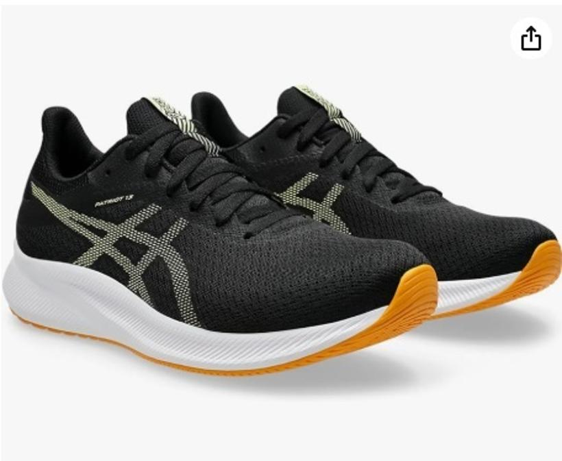

うるがいの話 ある日
最新: 探し物【うるがいの話 ある日】とは 一日だけのプログです
『うるがいの話』の最新一日だけのプログで、通信料が少なく経済的だ。カニの画像をクリックすると全ての日付が載る『うるがいの話』サイトを表示します
|
|
【うるがいの話】 うるがい(ｳﾙｶﾞｲ urugai)とは、『もずくがに』の名前でとても大きくなります。 |
|---|---|
|
|
【カミマヤーの話】 猫のことを方言でマヤーといいます。カミマヤー（kamimayaa）とは、神の猫のことです。 |
|
【たながぁの音楽】 たながぁ（ﾀﾅｶﾞｰ tanagaa）とは手長えびのことで、何種類かあり大きいのは車 エビぐらいになります。 |

|
【ぶながぁの話】 ぶながぁ(ﾌﾞﾅｶﾞｰ bunagaa)とは、赤い髪の毛、赤い身体、そして身長は１ｍ２０ｃｍ ぐらい、川の蟹を食べているの目撃された。場所は沖縄県国頭郡大宜味村のと ある村僕の隣近所に住んでいる爺さんから、聞いた話です。 |
|
|
【ギーマの話】 ギーマ(giima)とは、山原の里山に咲くスズランに似た、 花を付けます。実は食べられます、 気が付くと口の周りが紫になっています。 |
2025年02月25日 (火）探し物
17:19
2025年02月25日 (火) 確定申告
17:19
初めての年金取得にかかる確定申告（E tax確定申告)を行った。
少額すぎて申告の必要は、ないのだろうが。暇なので・・・・・・
本来なら、去年の４月の給料の収入を申告すべきだが、給与明細お
よび年末調整のための源泉徴収票も、送られてない（送付すべきだ
が）ので、マ、いいか。ハローワークの求人情報をみていたら！
職種
プログラマー（コボル言語）
仕事の内容
コボル言語を使用してのシステム開発
すごい、ＣＯＢＯＬ言語でなくコボル言語、カッコイイと思ったの
はオジサンだけ？。ちなみに、別の２件は
職種
【契約社員】／沖縄 ＳＥ・プログラマー（Ａ－７）
仕事の内容
ＣＯＢＯＬ等を使用したアプリケーションの設計、プログラミング
職種
（契）汎用系エンジニア（沖縄県那覇市）
仕事の内容
・汎用系システムの開発・保守を行って頂きます。
・使用言語はＣＯＢＯＬ、ＰＬ／１、ＲＰＧが主になります。
・オープン系の開発経験のある方（尚可）
フムフム、いまはマンションの後片付けで忙しいので。

６，０２３円のジョギングシューズをアマゾンで注文、今日ウォー
キングに利用する。以前は、フルマラソン用に１万３千円ほどの高
級シューズだったのだが、さすがに、ネ。ちなみに履き心地は、マ
値段相当です、サイズはピッタリでした。
ファミリーマートで靴を受け取りにいく途中で見たイチハツ